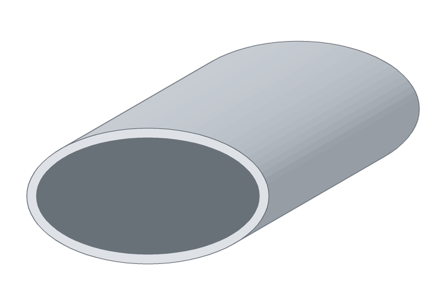

Caño ovalado de aluminio 25 × 14 × 1 mm
Se emplean en barandas, pasamanos y aplicaciones donde importa la forma además de la resistencia.

Caño ovalado de aluminio 25 × 14 × 1 mm
- Eje mayor
- 25 mm
- Eje menor
- 14 mm
- Espesor
- 1 mm
- Largos
- 6 m
- Aleación
- 6063
¿Necesitás esta medida cortada a un largo puntual? Trabajamos con siete extrusores: si existe en el país, lo conseguimos.
Cortamos a medida y entregamos en todo el país.